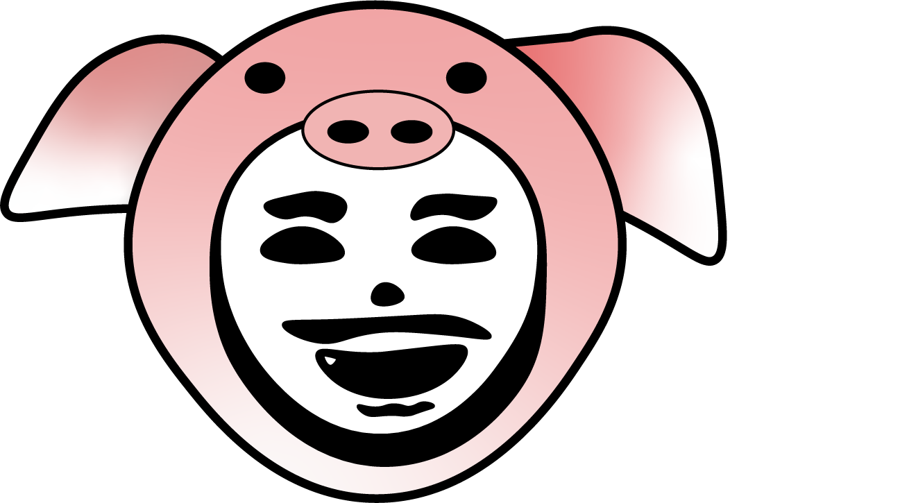

最新消息

品牌精神
「鬍鬚蕭」名字的由來
農場取名「鬍鬚蕭」，原因有二，一是非常像是蕭大哥滿臉鬍鬚渣的外貌，另 一方面則是為了紀念祖父母，當年一路帶著勇氣從斗六南下。鬍鬚就像是滿園植物的 根，它強悍地往下紮往下長，給了家人食物，延續了家族命脈，也汲取了源於土 壤所給予的寬容滋養和愛，希望時時提醒自己莫忘初衷，也希望藉他們的手， 把充滿愛的農作物，可以把這份島嶼給的滋養再散播出去。
更多閱讀
「鬍鬚蕭」名字的由來
農場取名「鬍鬚蕭」，原因有二，一是非常像是蕭大哥滿臉鬍鬚渣的外貌，另 一方面則是為了紀念祖父母，當年一路帶著勇氣從斗六南下。鬍鬚就像是滿園植物的 根，它強悍地往下紮往下長，給了家人食物，延續了家族命脈，也汲取了源於土 壤所給予的寬容滋養和愛，希望時時提醒自己莫忘初衷，也希望藉他們的手， 把充滿愛的農作物，可以把這份島嶼給的滋養再散播出去。
更多閱讀